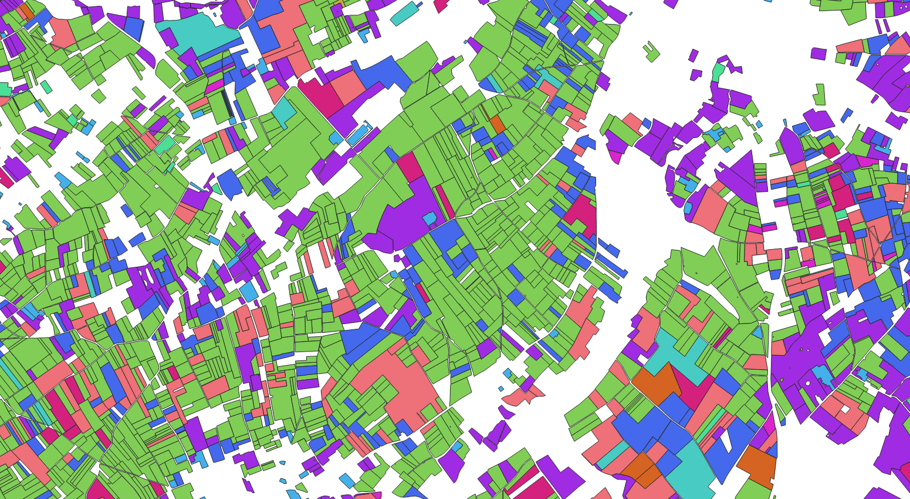

Home
Data preparation code to handle LPIS type geographic data (agricultural parcels) homogeneously on the European territory.
Purpose : transform multiple and heterogeneous data into more integrated and homogeneous data.
The agricultural data are produced and published (not all of them) by the various European organizations that distribute agricultural subsidies.

Specifications
Each organization has its own data specs :
-
at the level of the parcel identification attribute
-
at the level of the attribute describing the crop of a parcel. The latter often corresponds to a code or a label in a well-defined crop nomenclature.
But this is different depending on the payment organization and is often in the language of its country.
- on the map projection and the vector data format used.
Therefore, these different data cannot be easily used together. Especially when you want to use this data for web displays, statistical studies or to build training sets for AI / Deep-learning algorithms.
Data preprocessing:
- Survey of the different LPIS data sources and documentation of the various formats for each country.
- Cleaning and translating LPIS data
Available features:
- Convert data into different code nomenclatures.
- Reprojecting LPIS data according to specified spatial areas (Sentinel-2 tiling)
- Convert data to geojson (web display) or geopackage (GIS processing)
! Preliminary and uncompleted work that presents the required pre-treatments to work on LPIS data at the European level with a first version of code with 3 or 4 selected data sources and 2 target nomenclatures.
Future developments:
- Temporal harmonization of the RPG data: multi-year queries on the data (find the stable plots and those which evolved).
-
Origin-destination links in the parcels which have evolved with an associated data model (sql table modeling and associated queries for example)
-
Automate the transformation of nomenclatures (RDF graph and implementation of ontologies)
Concrete applications such as :
-
Web visualization of several homogenized data
-
Statistics and visualization of comparative data between crops of different countries
Technical choices
To meet the different needs we decided to develop and implement a github code repository which will include :
- An associated website, generated as a static site / pages via a mkdocs type engine. This documentation should be used to host documentation on LPIS data sources.
- Python notebooks for each data source
- A python module for data conversion functionalities.
- Configuration files (nomenclature, conversion table) for each data source. Files in .txt / .csv format or example to be versioned.
By default we will use the existing python libraries for the processing of geographic data (pandas / geopandas, fiona).
If performance problems occurs, we can use databases (spatial extension of SQLite or PostGIS for PostGreSQL).